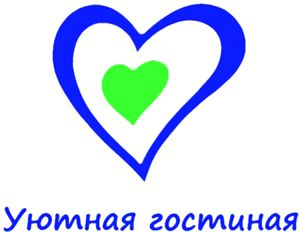

- Социально-реабилитационный центр
- КИВИ — Клуб Искренних Волонтерских Инициатив
- Уютная гостиная
- Завершенные проекты
- Отчет о деятельности социально-реабилитационного центра
Уютная гостиная
 Уютная гостиная
Досугово-образовательный центр для девочек из семей мигрантов в возрасте от 10 до 17 лет. В нашем Центре девочки могут изучать русский язык, знакомиться с культурой жизнью Санкт-Петербурга, делать уроки, развиваться творчески, а так же получить консультацию психолога, социального работника. Найти друзей возможно в нашем Центре не только среди сверстников, но и среди волонтеров, которые активно вовлечены в повседневную деятельность.
При центре действует волонтерский клуб, в котором волонтеры прошли специальную подготовку в области педагогики, психологии, социологии, медицины.
Проект направлен на преодоление межэтнических барьеров в подростковой среде, помощь в адаптации девочкам из семей мигрантов, улучшение социально-психологического климата через мультикультурное образование.
Основная целевой группой являются девочки из семей мигрантов 10–15 лет, приехавшие из бывших стран СНГ и горячих точек России и обучающиеся в общеобразовательных средних школах Санкт-Петербурга.
Мероприятия проекта:
- обучение русскому языку;
- факультативные занятия по истории и культуре России, способствующие формированию у девочек из семей мигрантов российской идентичности;
- социально-психологическая поддержка детей мигрантов с учетом целесообразности работы с семьей в целом;
- информационная работа с родителями детей мигрантов, способствующая их активному включению в жизнь общества;
- организация кружка «кулинарное искусство».
Мигранты, любых поколений и возрастов, должны чувствовать себя согражданами многонационального российского социума. Воспитание терпимости должно быть ежедневной кропотливой работой. Перед глазами у детей ежедневно как образцы для поведения должны быть толерантные люди.